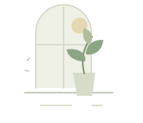

Type a task with a deadline like "Report fri 18:00 !"or pin a reminder at the top.
Reminds once at the chosen time and advances on completion.Missed periods roll forward without piling up; active while running.
Stays pinned above your scrolling tasks.No deadline — stays until you archive it manually.
Ctrl+Alt+Q toggle · Ctrl+Alt+G ghost click-through · Ctrl+N new task
Saved locally on this computer with atomic writes and 20 daily snapshots. No account or cloud sync.